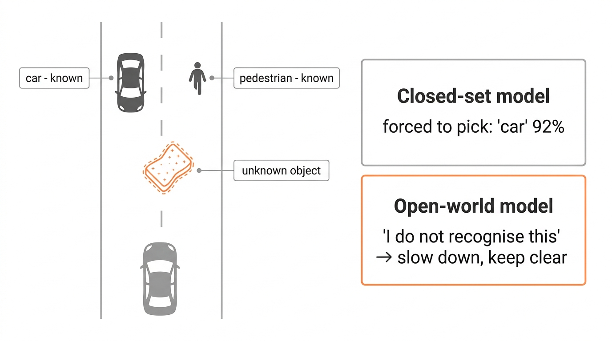

Can Autonomous Vehicles Recognize Situations They Have Never Seen Before?

In one sentence
Real roads keep producing things no training set contained — can a self-driving car notice "I do not understand what is in front of me" and respond safely, instead of forcing the scene into a category it already knows?
What is the problem?
A mattress has fallen off a truck and is lying in the middle of the motorway. The car's perception system was trained on millions of images of cars, trucks, cyclists, pedestrians and traffic cones. It was never shown a mattress on a motorway. So what does it do? It does what every standard classifier does: it picks the closest thing it knows. Maybe it calls it "car" with 92% confidence. Maybe it decides it is part of the road surface and ignores it.
Mattresses are just one example. Real roads are full of the unseen: a construction zone with hand-painted signs, a person in a dinosaur costume, a horse and cart, a police officer directing traffic against the lights, snow that hides every lane marking, a driver reversing on a slip road. Each of these is individually rare, but together they happen all the time. Engineers often call this the long tail.
Detecting "this input looks different from training data" is a known research area, usually called out-of-distribution (OOD) detection. But this open problem asks for something more: can the vehicle recognise that it does not understand the current situation — and react safely? Spotting a strange pixel pattern is not enough; the car needs to know that its picture of the world has a hole in it, where the hole is, and what to do about it.

Why does it matter?
Autonomous vehicles already work well on the situations they were built for. The remaining serious incidents tend to cluster in exactly the unusual cases: the unexpected object, the unusual road layout, the person behaving strangely. You cannot fix the long tail by collecting more data forever, because there is always another rare case.
- Safety: a car that knows it is confused can slow down, keep distance or ask for help. A car that does not know it is confused carries on at full speed.
- Deployment: when a fleet moves to a new city or country, the first sign of trouble is usually a stream of unfamiliar situations. Catching them early is cheaper than learning from accidents.
- Data collection: every "I do not understand this" moment is exactly the data that should be sent back to engineers and added to training.
What would a solution look like?
I think a good solution has three layers, each answering a different question:
| Layer | The question it answers |
|---|---|
| Object level | Is there something in this part of the scene that does not belong to any class I know? (An "unknown object" rather than a wrong label.) |
| Scene level | Is the whole situation unusual, even if every individual object is familiar? (A normal car driving the wrong way; a normal person standing on a motorway.) |
| Action level | Given what I do not understand, what is the safest thing to do? (Avoid the unknown region, slow down, increase margins, request help — see OP-12.) |
The key idea: "unusual" is not the same as "dangerous"
A naive OOD detector flags anything unfamiliar. On a real road that is almost everything: a car painted an unusual colour, a new style of bus shelter, a shop sign in a different language. If each of these triggered a warning, the car would never move.
What matters is novelty that affects the driving decision. A strange billboard at the side of the road is unusual but irrelevant. A strange object in the lane, or a familiar object behaving in an unfamiliar way, is relevant. So the real target is not "is this input different?" but "is there something here that my model of the scene cannot explain, and that could change what I should do?" That shift — from statistical novelty to decision-relevant novelty — is, to me, the heart of the problem.
Why is it hard?
- You cannot train on the unknown. By definition, the situations we care about are not in the training data. Any method that needs examples of them is already cheating a little.
- Networks are over-confident off-distribution. Standard classifiers can give very high scores to inputs that look nothing like their training data.
- Novelty is often in the behaviour, not the appearance. A car, a pedestrian, a road — all familiar. The car driving towards you in your lane is not. Image-level detectors miss this.
- Many sensors, many time steps. A self-driving car fuses cameras, LiDAR and radar over time. "Unknown" has to be decided in 3D, in real time, consistently from frame to frame.
- False alarms are costly. Every unnecessary brake is uncomfortable and can itself be dangerous for the car behind.
What has been tried so far
- Confidence-based OOD detection — flag inputs where the classifier's top score is low, or use tweaks such as temperature scaling and energy scores. Simple, but inherits the over-confidence problem.
- Distance in feature space — measure how far an input's internal representation is from the training data. Often better than raw confidence, but needs a good notion of "distance".
- Outlier exposure — train with a separate set of "other" images so the model learns to give low confidence to things outside its classes. Helps, but the real unknowns may look nothing like the chosen outliers.
- Open-set and open-world recognition — detectors that can output an explicit "unknown" class and later learn new classes incrementally.
- Anomaly segmentation benchmarks — datasets that place unusual objects (lost cargo, animals, debris) on roads and ask a model to mark the anomalous pixels. Useful for measuring progress on the object level.
- Reconstruction and generative models — learn to rebuild normal scenes, and flag regions that cannot be rebuilt well.
Most of this work stops at a score or a pixel mask. Much less of it connects the detection to scene-level reasoning and to the vehicle's behaviour, which is what an actual car needs.
How I would approach it
- Start from existing road anomaly benchmarks and driving simulators, where unusual objects and behaviours can be inserted in a controlled way.
- Compare several kinds of novelty signal side by side — confidence, feature distance, reconstruction error, and how the internal representation changes over time (in the spirit of OP-01 and OP-04).
- Separate "unusual but harmless" from "unusual and relevant" by asking whether the novel region overlaps the planned path or nearby road users.
- Feed the result into a simple graded response (OP-12) and measure the trade-off between avoided dangerous situations and unnecessary slowdowns.
Questions still open
- Can we detect behavioural novelty — familiar objects doing unfamiliar things — as reliably as visual novelty?
- How do we define and measure "decision-relevant" novelty, so that harmless oddities are ignored?
- Does the shape of the representation space (topology) reveal unknown situations better than distance alone? (see OP-04)
- How should the car act around an object it cannot identify — treat it as solid, as moving, as the worst case?
- Can a fleet share "I did not understand this" moments to improve together without sharing raw camera data? (see OP-10, OP-11)
- Could an attacker create objects that look ordinary to the novelty detector but fool the main model?
This problem connects directly to detecting model failure before it happens (OP-01), deciding when not to trust oneself (OP-12), and foreseeing dangerous scenarios (OP-14).
Work on this together
I am actively looking for collaborators here. If you work on OOD or anomaly detection, open-world perception, autonomous driving datasets or simulation — or you have seen your own driving stack confidently mislabel something strange — I would be glad to hear from you.
Reach out about OP-13Further reading
- Hendrycks & Gimpel — A Baseline for Detecting Misclassified and Out-of-Distribution Examples in Neural Networks (ICLR 2017)
- Hendrycks, Mazeika & Dietterich — Deep Anomaly Detection with Outlier Exposure (ICLR 2019)
- Liu et al. — Energy-based Out-of-distribution Detection (NeurIPS 2020)
- Lee et al. — A Simple Unified Framework for Detecting Out-of-Distribution Samples and Adversarial Attacks (NeurIPS 2018)
- Bendale & Boult — Towards Open Set Deep Networks (CVPR 2016)
- Joseph et al. — Towards Open World Object Detection (CVPR 2021)
- Chan et al. — SegmentMeIfYouCan: A Benchmark for Anomaly Segmentation (NeurIPS Datasets and Benchmarks 2021)